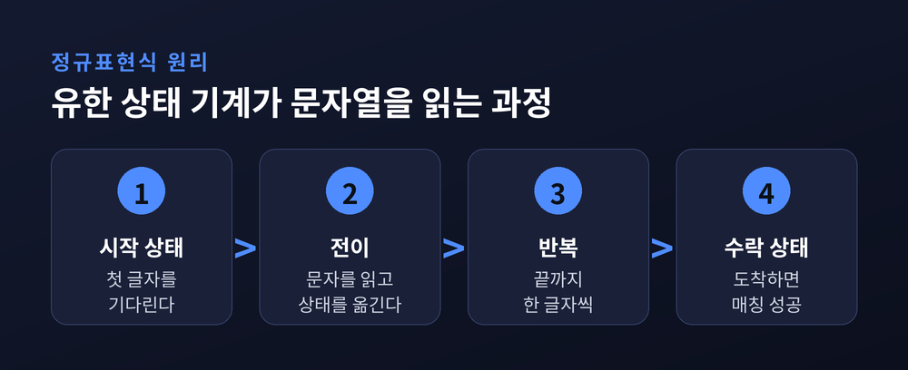
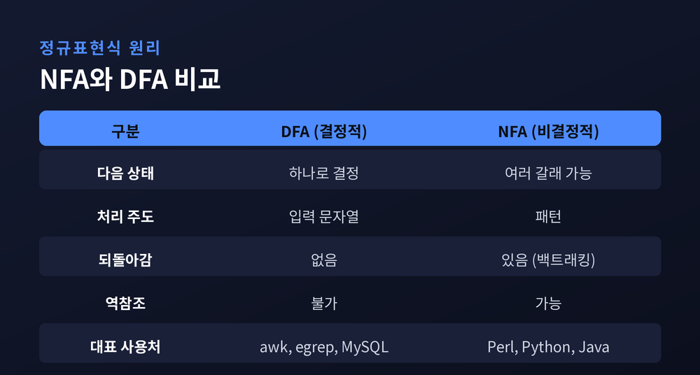
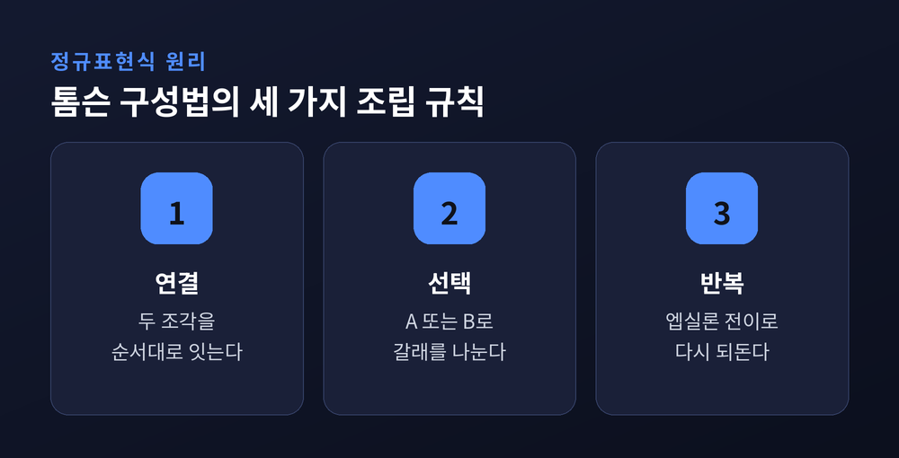
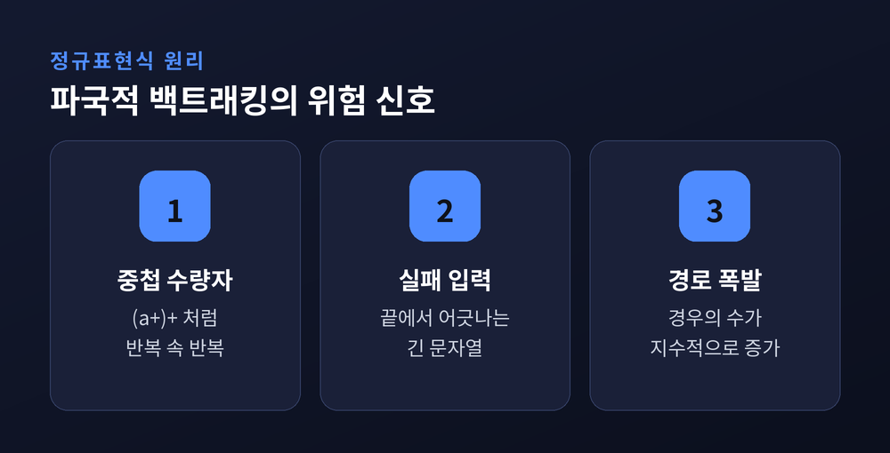
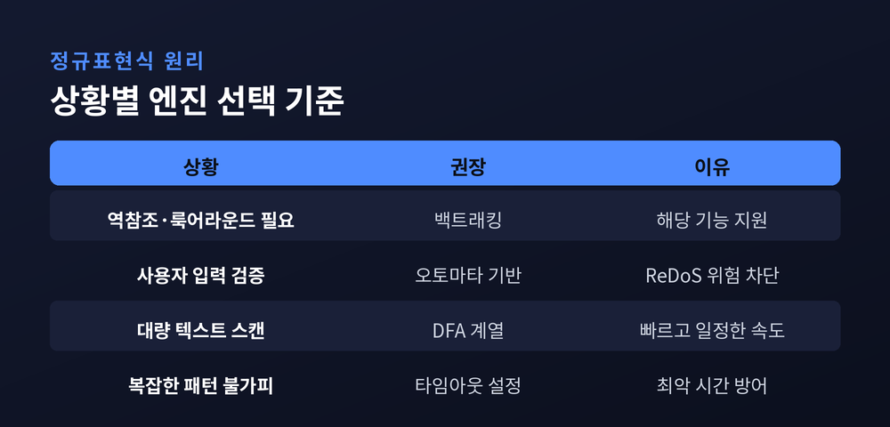

이번 글에서는 정규표현식이 어떻게 문자열을 찾아내는지 그 속을 열어 정리해 보겠습니다. 우리가 무심코 쓰는 `\d+` 같은 짧은 식이, 컴퓨터 안에서는 '상태를 옮겨 다니는 작은 기계'로 바뀌어 돌아갑니다. 그 기계가 무엇이고, 정규표현식이 어떻게 그 기계로 번역되며, 왜 어떤 정규식은 서버를 멈춰 세울 만큼 느려지는지까지 차근히 따라가 보려 합니다.
정규표현식은 하나의 문자열이 아니라, 규칙을 만족하는 문자열들의 모임을 기술하는 표기법입니다.
`\d{3}-\d{4}` 라고 쓰면, 이는 특정 전화번호 하나가 아니라 그런 꼴을 가진 모든 문자열의 집합을 가리킵니다.
이 발상의 뿌리는 꽤 오래전으로 거슬러 올라갑니다. 1951년 수학자 스티븐 클레이니가 신경망을 수학으로 기술하려다, '정규 사건'이라는 표기를 고안한 것이 출발점입니다.
그가 정리한 세 가지 연산 — 연결, 선택(합집합), 반복(닫힘) — 이 오늘날 우리가 쓰는 정규표현식의 뼈대가 되었습니다. 반복을 뜻하는 `*` 를 지금도 '클레이니 스타'라 부르는 이유입니다.
이론에 머물던 이 표기가 실무로 내려온 것은 1968년경입니다. 켄 톰슨이 텍스트 편집기의 검색·치환에, 그리고 컴파일러의 어휘 분석에 정규표현식을 끌어들이면서 대중화되었습니다.
여기서 가장 중요한 사실 하나를 짚고 넘어가야 합니다.
“정규표현식과 유한 상태 기계는 서로 같은 것을 표현한다.”
모든 정규표현식에는 그것과 똑같은 언어를 인식하는 유한 상태 기계가 존재합니다. 바로 이 등가성 덕분에, 사람이 쓴 패턴을 기계가 실행할 수 있는 것입니다.
유한 상태 기계란 이름은 거창하지만 구조는 단순합니다.
유한한 개수의 상태가 있고, 입력 문자를 하나 읽을 때마다 한 상태에서 다른 상태로 넘어가는 전이가 있습니다.
시작 상태에서 출발해 문자를 왼쪽부터 하나씩 먹으며 상태를 옮겨 다닙니다. 입력이 끝났을 때 '수락 상태'에 도착해 있으면, 그 문자열은 패턴에 매칭된 것입니다.
비유하자면 지하철 노선도와 같습니다. 출발역에서 시작해, 손에 든 문자 순서대로 정해진 노선을 갈아타고, 마지막에 '도착역'에 서 있으면 통과입니다.
중요한 것은 이 기계가 패턴 전체를 기억하지 않는다는 점입니다. 지금 어느 상태에 있는지, 그 하나만 알면 됩니다. 그래서 '유한 상태'입니다. 이 단순함이 곧 속도의 비결이 됩니다.

유한 상태 기계에는 성격이 다른 두 종류가 있습니다.
하나는 DFA(결정적 유한 오토마타)입니다. 어떤 상태에서 어떤 문자를 읽으면, 갈 곳이 정확히 하나로 정해집니다. 망설임이 없습니다.
처리는 입력 문자열이 이끕니다. 문자를 처음부터 순서대로 훑으며, 같은 문자를 두 번 보는 일이 없습니다. 그래서 되돌아갈 일도 없습니다.
다른 하나는 NFA(비결정적 유한 오토마타)입니다. 한 상태에서 같은 문자를 보고도 여러 갈래로 갈 수 있고, 문자를 소비하지 않고 상태만 옮기는 'ε(엡실론) 전이'도 허용됩니다.
말하자면 NFA는 여러 갈림길을 동시에 품을 수 있는 기계입니다. 전통적인 NFA 엔진은 하나의 갈래를 성공적으로 지나면 그 지점을 저장해 두었다가, 뒤에서 막히면 그리로 되돌아와 다른 갈래를 시도합니다.
두 방식의 차이를 표로 정리하면 이렇습니다.

| 구분 | DFA(결정적) | NFA(비결정적) |
|---|---|---|
| 다음 상태 | 문자마다 하나로 결정 | 여러 갈래 가능, ε 전이 허용 |
| 처리 주도 | 입력 문자열이 주도 | 패턴이 주도(전통 엔진) |
| 되돌아감 | 없음(같은 문자 재검사 안 함) | 있음(저장한 상태로 백트래킹) |
| 역참조 | 불가 | 가능 |
| 대표 사용처 | awk, egrep, MySQL | Perl, Python, Java, .NET, PCRE |
흥미로운 점은, 이 둘이 표현할 수 있는 언어의 범위가 똑같다는 사실입니다. 성능과 기능의 성격만 다를 뿐입니다.
사람이 쓴 정규표현식이 기계가 되기까지는 대개 두 번의 번역을 거칩니다.
첫 단계는 톰슨 구성법입니다. 정규표현식을 NFA로 바꾸는 방법입니다.
이 방법은 구문을 따라 재귀적으로 움직입니다. 정규식을 잘게 쪼개 가장 작은 조각(문자 하나)부터 NFA로 만들고, 이 조각들을 세 가지 규칙 — 연결, 선택, 반복 — 으로 ε 전이를 써서 이어 붙입니다.

이 방식의 미덕은 크기가 통제된다는 데 있습니다. 만들어지는 NFA의 상태 수는 정규식에 든 연산자와 문자 개수의 최대 두 배를 넘지 않습니다. 각 단계가 새 상태를 많아야 두 개만 만들기 때문입니다. 즉 NFA로의 번역은 정규식 길이에 비례하는 선형 작업입니다.
두 번째 단계는 부분집합 구성법입니다. NFA를 DFA로 바꾸는 방법입니다.
핵심 발상은 한 문장으로 요약됩니다. "DFA의 한 상태는 곧 NFA 상태들의 집합이다." NFA가 어떤 입력을 읽었을 때 '동시에 있을 수 있는 모든 상태의 묶음'을 하나의 DFA 상태로 삼습니다. 이렇게 하면 여러 갈래를 한 덩어리로 다루게 되어 비결정성이 사라집니다.
이렇게 얻은 DFA는 다시 '최소화'를 거쳐 군더더기 상태를 없앨 수 있습니다. 정리하면 전체 흐름은 이렇습니다 — 정규식에서 NFA로, NFA에서 DFA로, 다시 최소 DFA로.
다만 여기에는 대가가 있습니다. 상태의 '집합'을 다루다 보니, 최악의 경우 DFA의 상태 수가 폭발적으로 늘 수 있습니다. 그래서 실무 엔진은 DFA를 미리 다 만들지 않고, 필요할 때마다 상태를 만들어 저장해 두는 방식을 쓰기도 합니다.
같은 정규표현식을 실행하더라도, 엔진이 매칭하는 방식은 크게 둘로 갈립니다.
예전엔 대부분의 엔진이 되돌아가며 답을 찾았습니다. 지금은 되돌아가지 않고도 같은 답을 찾는 엔진이 주요 서비스에 자리 잡았습니다.
되돌아가는 쪽이 백트래킹 방식입니다. Perl, PCRE, Python, Java, Ruby 등 우리가 흔히 쓰는 언어 대부분이 여기에 속합니다.
한 갈래를 끝까지 따라가 보고, 막히면 마지막 분기점으로 되돌아가 다른 갈래를 시도하는 깊이 우선 탐색입니다. 이 유연함 덕에 역참조나 룩어라운드 같은 강력한 기능을 지원할 수 있습니다.
되돌아가지 않는 쪽이 오토마타 기반 방식입니다. 톰슨의 원래 알고리즘은 갈래를 하나씩 시도하는 대신, 가능한 모든 상태를 동시에 추적하며 입력을 한 번씩만 훑습니다. 이른바 '락스텝' 방식입니다.
이 방식은 입력 길이에 비례하는 선형 시간을 보장합니다. 대표 구현이 구글이 만든 RE2입니다. RE2는 최악의 경우에도 실행 시간을 패턴 길이와 입력 길이의 곱 규모로 묶어 둡니다.
물론 공짜는 아닙니다. RE2는 역참조나 일반화된 assertion처럼 백트래킹이 있어야만 구현되는 기능을 의도적으로 뺐습니다. 표현력의 일부를 내주고, 그 대가로 안정적인 속도를 얻은 셈입니다.
백트래킹 엔진의 유연함에는 그림자가 있습니다. 바로 파국적 백트래킹입니다.
원리는 이렇습니다. 하나의 입력을 설명할 수 있는 경우의 수가 지수적으로 많은데, 백트래킹 매처가 그 모든 경우를 고집스럽게 하나씩 시도할 때 문제가 터집니다.
반복이 겹치면 경로의 수가 걷잡을 수 없이 불어납니다. 특히 위험한 것이 중첩된 수량자입니다. `(a+)+`, `(a*)*`, `(a|a)*` 처럼 수량자가 붙은 그룹이 또 다른 수량자 안에 들어간 형태입니다.

예를 들어 `(a+)+$` 라는 패턴에 `aaaaaaaaaaaaaaaaX` 처럼 매칭에 실패하도록 끝나는 문자열을 주면 어떻게 될까요. 엔진은 'a들을 안쪽 반복과 바깥 반복에 어떻게 나눠 담을지' 그 모든 조합을 시도합니다. 글자 수십 개만으로도 사실상 멈춘 것처럼 느려집니다.
이것을 악용한 공격이 ReDoS(정규표현식 서비스 거부)입니다. 정교하게 만든 짧은 입력 하나로 서버를 마비시키는 것입니다. 실제로 Stack Overflow와 Cloudflare가 이 문제로 큰 장애를 겪은 바 있습니다.
같은 정규표현식이라도 엔진에 따라 운명이 갈립니다. 너비 우선으로 훑는 톰슨식은 입력 길이에 선형인 시간을 지키지만, 깊이 우선으로 되돌아가는 스펜서식은 최악의 경우 지수 시간으로 치닫습니다. 주류 언어 다수가 후자를 쓰고 있다는 점을 기억해 둘 만합니다.
정답은 하나로 정해져 있지 않습니다. 무엇을 포기할 수 있느냐의 문제입니다.
역참조나 룩어라운드가 꼭 필요하다면 백트래킹 엔진을 써야 합니다. 반면 사용자 입력을 정규식으로 검사하는 등 외부 데이터를 다룰 때는, 선형 시간을 보장하는 오토마타 기반 엔진이 안전합니다.

| 상황 | 권장 방향 | 이유 |
|---|---|---|
| 역참조·룩어라운드 필요 | 백트래킹(PCRE 등) | 해당 기능은 백트래킹만 지원 |
| 사용자 입력 검증 | 오토마타 기반(RE2 등) | ReDoS 위험 차단, 선형 시간 |
| 대량 로그·텍스트 스캔 | DFA 계열 | 되돌아감 없어 빠르고 일정 |
| 복잡한 패턴 불가피 | 타임아웃·패턴 단순화 | 최악 시간 방어 장치 |
솔직히 어느 방식도 완벽하지는 않습니다. 빠른 쪽은 기능이 좁고, 기능이 넓은 쪽은 위험을 안고 있습니다. 그 사이에서 균형점을 고르는 것이 결국 엔지니어의 몫입니다.
정리하면 이렇습니다. 정규표현식은 마법이 아니라, '상태를 옮겨 다니는 작은 기계'로 번역되어 돌아가는 정직한 계산입니다.
그 번역 과정을 알면, 왜 어떤 패턴은 빛처럼 빠르고 어떤 패턴은 서버를 멈추는지가 비로소 보입니다.
— 패턴을 잘 쓰는 사람과 잘못 쓰는 사람의 차이는, 정규식 안에 숨은 기계를 상상할 수 있느냐에서 갈립니다.
다음에 `*` 하나를 무심코 겹쳐 쓰기 전에, 그 안에서 조용히 갈래를 세는 기계를 한 번 떠올려 보시면 좋겠습니다.